Overview
- ggplot Essentials
- Fancy graphs
ggplot Essentials
Let’s keep working on a graph we discussed in the very first session.
We used some (fake) consumers data about a particular brand
and exposure to an advertising campaign for the brand.
These are the variables:
| Variable name | Variable Label | Value Labels |
|---|---|---|
| ad_expo | Exposure to the campaign | 1 = No exposure; 10 = Max exposure |
| wom | Heard about the brand through word of mouth | yes, no |
| gender | Gender of the respondent | female, male |
| brand_aw | Awareness of the brand | 1 = Not aware; 10 = Max aware |
| firstname | Respondent’s first name |
Here is the plot we started to recreate in Session 1:
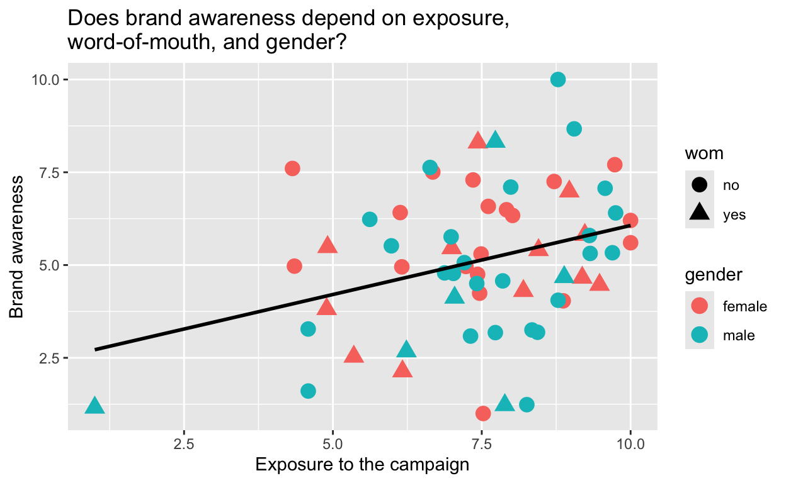
Here is how far we got:
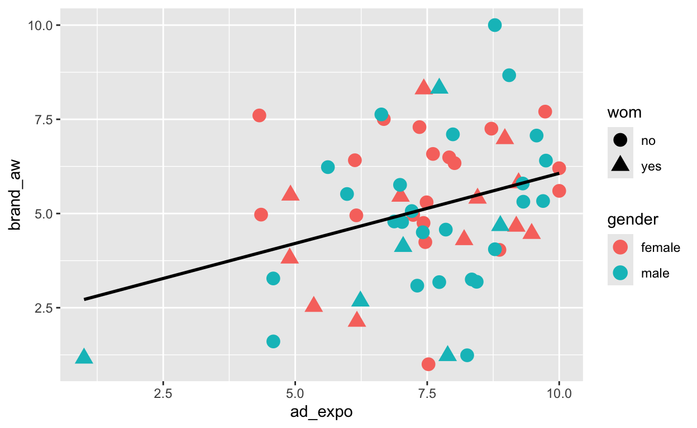
Axis Labels
Add the labels to the plot or change the labels. Mind the details.
# The code below creates the final solution we arrived at in Session 1.
ggplot(
data = consumers,
mapping =
aes(
x = ad_expo,
y = brand_aw
)
) +
geom_point(
mapping = aes(shape = wom, color = gender),
size = 4
) +
geom_smooth(
method = "lm",
se = FALSE,
color = "black"
)Hint: Consider the details of both axes and the title. Use ‘’ to add linebreaks to a label.
ggplot(
data = consumers,
mapping =
aes(
x = ad_expo,
y = brand_aw
)
) +
geom_point(
mapping = aes(shape = wom, color = gender),
size = 4
) +
geom_smooth(
method = "lm",
se = FALSE,
color = "black"
) +
labs(
title = "Does brand awareness depend on exposure, \nword-of-mouth, and gender?",
x = "Exposure to the campaign",
y = "Brand awareness"
)Facetting
Different graphs for different groups of observations.
- facet_wrap(~ x): one grouping variable
- facet_grid(y ~ x): two grouping variables
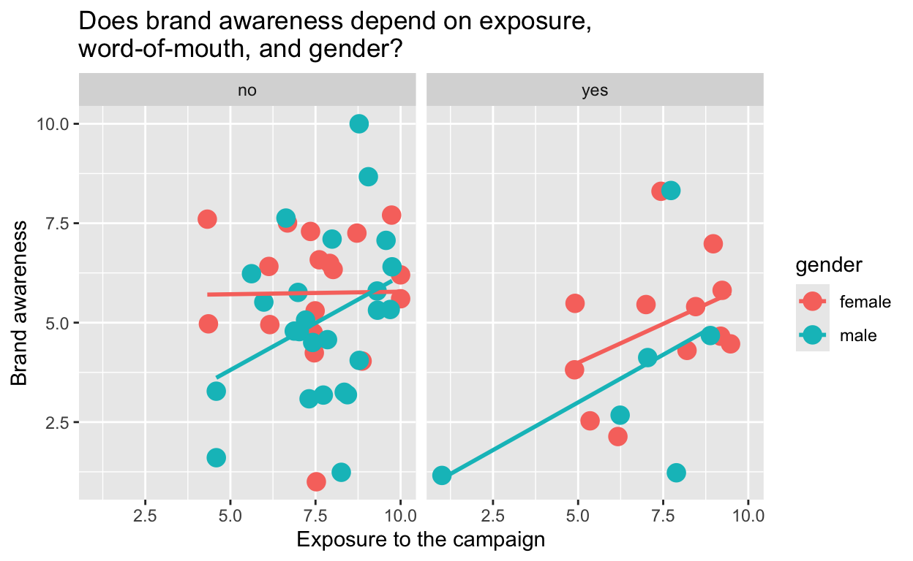
Adjust the visualization to match the plot above. Create two plots in one row.
# Copy the solution to the preceding exercise here as your starting point.
ggplot()Hint: You must use the vars() function to identify the variable that is used to create facets.
# Adaptation: word of mouth as facets instead of shape.
ggplot(
data = consumers,
mapping =
aes(
x = ad_expo,
y = brand_aw
)
) +
geom_point(
mapping = aes(color = gender),
size = 4
) +
geom_smooth(
mapping =
aes(color = gender),
method = "lm",
se = FALSE
) +
labs(
title = "Does brand awareness depend on exposure, \nword-of-mouth, and gender?",
x = "Exposure to the campaign",
y = "Brand awareness"
) +
facet_wrap(~wom)Adding labels to datapoints
We may want to know who is the outlier in the plot, having an
exceptionally low exposure score. Use geom_text() to add
the participants’ first names to the plot, as shown below. Carefully
inspect the arguments for this geom.
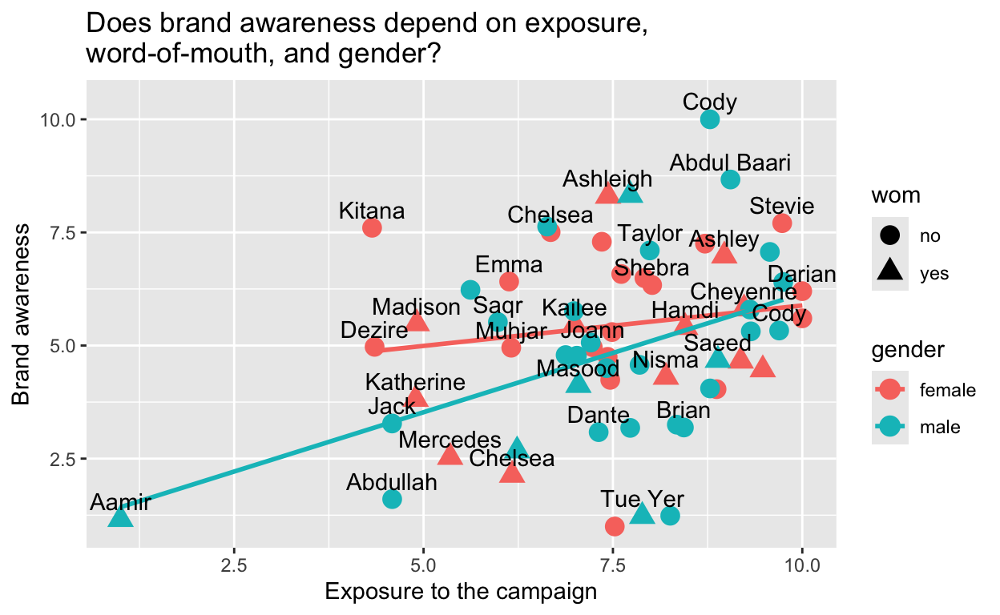
Create this graph yourself.
ggplot(
data = consumers,
mapping =
aes(
x = ad_expo,
y = brand_aw
)
) +
geom_point(
mapping = aes(shape = wom, color = gender),
size = 4
) +
geom_smooth(
mapping =
aes(color = gender),
method = "lm",
se = FALSE,
) +
labs(
title = "Does brand awareness depend on exposure, \nword-of-mouth, and gender?",
x = "Exposure to the campaign",
y = "Brand awareness"
) +
geom_text()Hint: Use help on this geom to get more information about the arguments of this geom.
# Adaptation: swap color and shape, line color as aesthetic.
ggplot(
data = consumers,
mapping =
aes(
x = ad_expo,
y = brand_aw
)
) +
geom_point(
mapping = aes(shape = wom, color = gender),
size = 4
) +
geom_smooth(
mapping =
aes(color = gender),
method = "lm",
se = FALSE,
) +
labs(
title = "Does brand awareness depend on exposure, \nword-of-mouth, and gender?",
x = "Exposure to the campaign",
y = "Brand awareness"
) +
geom_text(
aes(label = firstname),
nudge_y = 0.4,
check_overlap = TRUE
)Adding primitives
Actually, we can draw all kinds of shapes on the plot, for example, an arrow drawing attention to the extremely low exposure score.
Use geom_segment to create this plot.
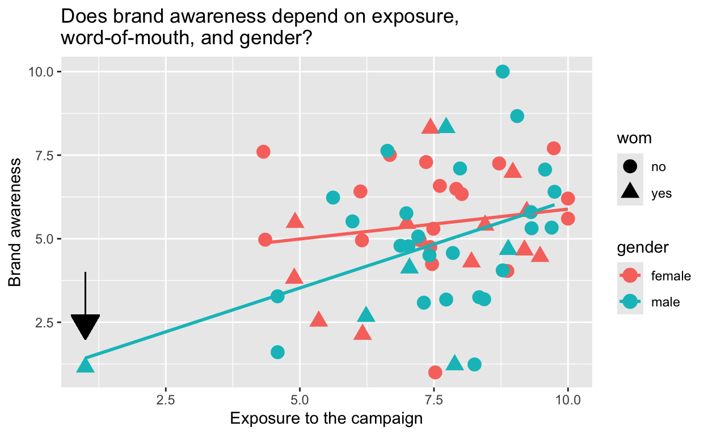
ggplot(
data = consumers,
mapping =
aes(
x = ad_expo,
y = brand_aw
)
) +
geom_point(
mapping = aes(shape = wom, color = gender),
size = 4
) +
geom_smooth(
mapping =
aes(color = gender),
method = "lm",
se = FALSE
) +
labs(
title = "Does brand awareness depend on exposure, \nword-of-mouth, and gender?",
x = "Exposure to the campaign",
y = "Brand awareness"
) +
geom_segment()Hint: Pay attention to the arrow
argument. It uses a function! Use help on the geom and on this
function.
# Adaptation: Add arrow pointing to extreme value.
ggplot(
data = consumers,
mapping =
aes(
x = ad_expo,
y = brand_aw
)
) +
geom_point(
mapping = aes(shape = wom, color = gender),
size = 4
) +
geom_smooth(
mapping =
aes(color = gender),
method = "lm",
se = FALSE
) +
labs(
title = "Does brand awareness depend on exposure, \nword-of-mouth, and gender?",
x = "Exposure to the campaign",
y = "Brand awareness"
) +
geom_segment(
x = 1, xend = 1, y = 4, yend = 2,
arrow = arrow(
type = "closed"
)
)Adding summaries to plots
An important goal when visualizing data is to visually emphasize important trends in the data. One way to do this is to display summary information together with all data points.
To do this, you first need to store summary information about a data set in a data object. Every geom can have its own data argument, so specify the data object with summaries in a geom that visualizes the summary information.
The below graph shows an example based on our (fake) consumer data. It shows the average brand awareness for male and female participants (with jitter) who have high (above median) or low (below median) exposure to the ads as well as their average brand awareness.
# Calculate and save
# brand awareness by groups.
# group by gender and ad exposure groups (above/below median)
averages <- consumers |> group_by(gender, ad_expo2) |>
# calculate mean, ignori missing values
summarise(mean_brand_aw = mean(brand_aw, na.rm = TRUE))
# Create plot
ggplot() +
# add individual brand awareness score with jitter
geom_jitter(data = consumers, aes(x = ad_expo2, y = brand_aw, color = gender)) +
# add mean scores as crosses
geom_point(data = averages, aes(x = ad_expo2, y = mean_brand_aw, color = gender), shape = "cross", size = 4) +
# add lines to link the means: note the `group` argument
geom_line(
data = averages,
aes(x = ad_expo2, y = mean_brand_aw, group = gender, color = gender)
)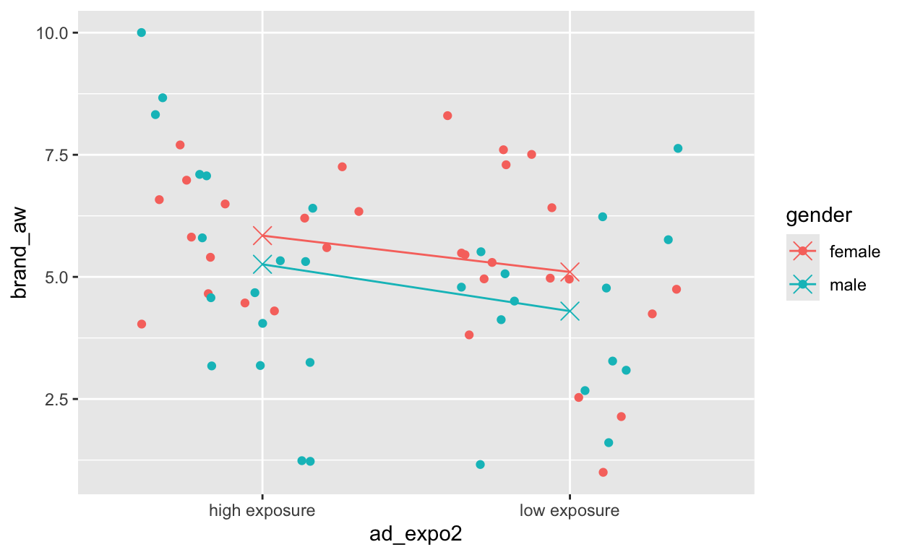
If we want to visually emphasize some parts of the graph over others, we can further tweak the different visual elements, for instance by adjusting colors and sizes.
Add transparency to geom_jitter to visually emphasize
the mean scores.
averages <- consumers |> group_by(gender, ad_expo2) |>
# calculate mean, ignori missing values
summarise(mean_brand_aw = mean(brand_aw, na.rm = TRUE))
ggplot() +
geom_jitter(data = consumers, aes(x = ad_expo2, y = brand_aw, color = gender), alpha = 0.3) +
geom_point(data = averages, aes(x = ad_expo2, y = mean_brand_aw, color = gender), shape = "cross", size = 4) +
geom_line(
data = averages,
aes(x = ad_expo2, y = mean_brand_aw, group = gender, color = gender)
)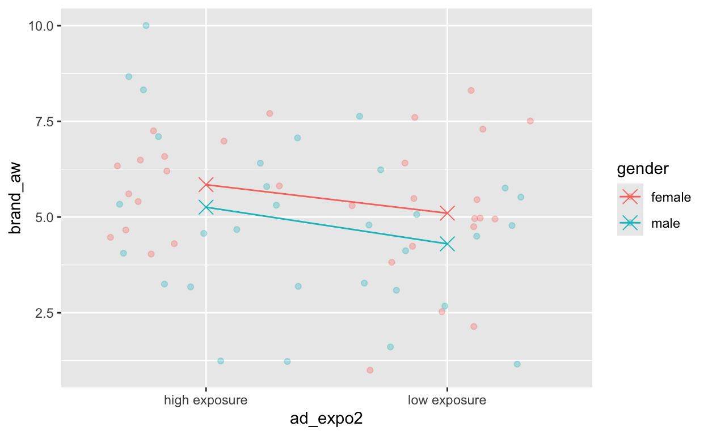
Play around with this plot. For example, use geom_text() to add the values of the group means to the plot or change the theme to make the background less prominent.
Your turn
Let’s make a different type of graph using the same
consumers data set.
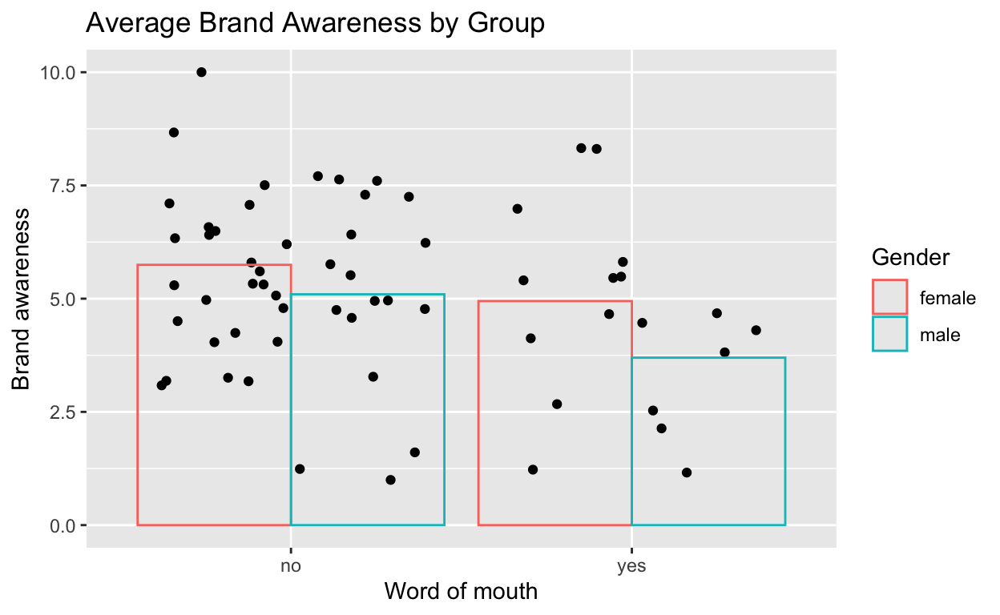
Try to recreate the graph above as closely as you can using the
consumers data. Hint: First create an aggregated dataframe
aggregate_consumers with the mean brand awareness by gender
and wom group.
Hint: Consider carefully which geom should make use
of which dataframe (consumers vs. aggregate_consumers) and adjust the
data and mapping arguments accordingly. Use
the alpha argument to make the bars transparent.
Error Bars
Great work! Now let’s add confidence intervals. There are R packages that compute the confidence intervals directly and you can find those easily by Googling. However, we can also easily create them ourselves:
Confidence interval of the mean =
mean +/- 1.96 * standard error.Standard error of the mean = standard deviation / sqrt(N)
Create the dataframe aggregate_consumers_se containing
the mean brand awareness (called mean_brand_aw) grouped by
gender and word of mouth together with its standard error (called
se_brand_aw).
Hint: Don’t forget to group the dataset before summarising.
Now we can add error bars to our graph using
geom_errorbar(). The final graph should look like this:
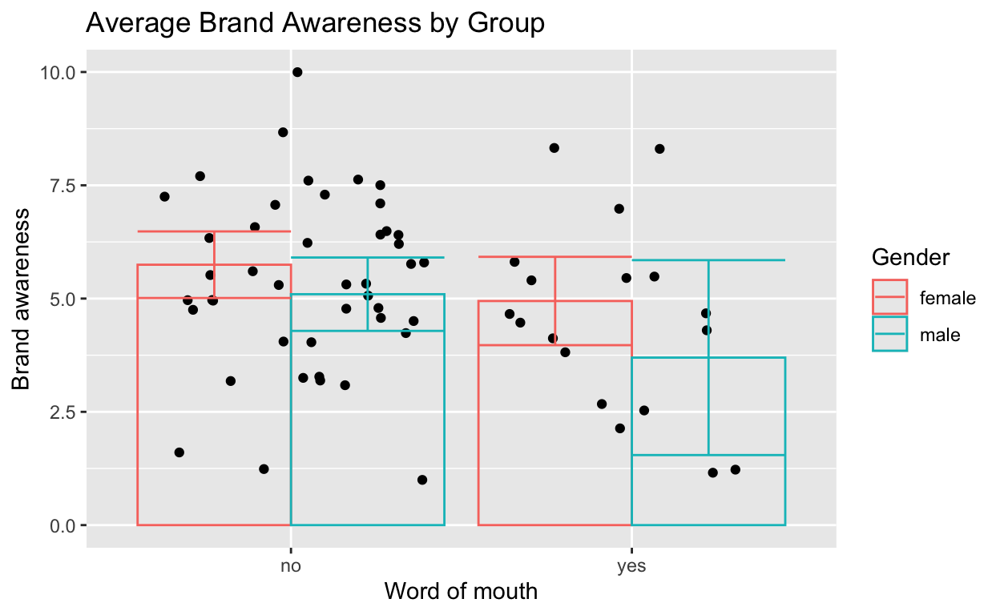
Look up help(geom_errorbar) and try to add errorbars to
the graph we created earlier.
ggplot(
data = aggregate_consumers_se,
mapping = aes(x = wom, y = mean_brand_aw, color = gender)
) +
geom_jitter(
data = consumers,
mapping = aes(y = brand_aw), color = "black"
) +
geom_bar(stat = "summary", fun = mean, position = "dodge", alpha = 0) +
labs(
x = "Word of mouth",
y = "Brand awareness",
color = "Gender",
title = "Average Brand Awareness by Group"
) +
geom_errorbar()Hint: Make sure to use the mapping
argument to specify ymin and ymax to ensure
that the correct means and standard errors are used per group. Use
position='dodge' to display the errorbars together with
their group.
Reminder from Session 1: Evaluating a Plot
Once you master the ggplot2 package and other packages
for creating plots (see the Fancy stuff part of this
tutorial), you should start thinking about what you want to convey with
a plot and whether the plot conveys your message in a clear and
attractive way.
We will use the following criteria in this course:
The data visualization is sufficiently complex to tell a story. For example, it presents both a pattern (as a first impression) and deviations from this pattern (inviting reflection about the pattern). The deviations, however, should not be overwhelming because of too much information.
The data visualization is self-explanatory. It should be comprehensible if it is presented by itself. For example, use informative, readable labels.
The data visualization gives an accurate, not a biased view of the data. For example, sizes should accurately reflect quantity.
The data visualization uses graphic features (size, font type, colors, line styles) in such a way that the main parts are stressed and unimportant parts remain visually in the background. Justify your choices with comments in the code.
If you see a plot (or any other graphic):
- Have a close look at a plot. What does it tell you?
- When the plot disappears, try to formulate your first impression of the plot, both in terms of the information it gives (What stands out in the plot?) and the (dis)pleasure it gives you.
- When the plot reappears, inspect it more closely. Where do your eyes go and which information do you collect during the process of looking at the plot.
Practice with the plots below. Use the checkboxes to show plots, which will first be shown for a few seconds and, a bit later, for a longer time.
Additional Resources
Book on ggplot2:
- Hadley Wickham, ggplot2. Elegant Graphics for Data Analysis. Springer. https://ggplot2-book.org/
Interactive training:
Fancy Stuff
gganimate package
If you want to animate your ggplot plot, the package gganimate
provides you with tools to create an animated GIF (with the
gifski package) or a video (with the av
package).
The code below creates an animated gif using Gapminder data on life expectancy, GDP per capita, and population size by country.
Play around with the settings that are specific to
animate().
Note that it takes quite some time to generate the animation.
# Install the following packages if they haven't been installed.
library(gganimate)
library(gifski)
library(gapminder) # data used
# This code creates an animated ggplot
g <- ggplot(gapminder::gapminder, aes(gdpPercap, lifeExp, size = pop, colour = country)) +
geom_point(alpha = 0.7, show.legend = FALSE) +
scale_colour_manual(values = country_colors) +
scale_size(range = c(2, 12)) +
scale_x_log10() +
facet_wrap(~continent) +
# Here comes the gganimate specific bits
labs(title = "Year: {frame_time}", x = "GDP per capita", y = "life expectancy") +
transition_time(year) +
ease_aes("linear") +
shadow_wake(
wake_length = 0.2
)
# And here, we show the animated plot.
gganimate::animate(
plot = g, # gganimate plot to be shown
nframes = 78, # 1 frame for each year from 1952 to 2007 plus 2x11 additional frames for start and end
renderer = gifski_renderer( # save as animated GIF
file = "gapminder.gif",
loop = TRUE
),
start_pause = 12, # first frame shows 12 times
end_pause = 12, # last frame shows 36 times
rewind = FALSE # roll back to the start
)If you would have a look at the gapminder data (e.g., with
View(gapminder)), you would see that the data are available
for 1952, 1957, 1962, 1967, and so on. The gganimate()
animation creates frames for the years in between. In a way, the data
for the in-between-years are fabricated; they may give a wrong view of
reality.
Programming Tip
- Carefully inspect the results created by packages that do a lot of work for you. They may do things that you do not want.
Movement is fascinating but it can also be frustrating if the user cannot pause or determine the speed of the animation. Evaluate the pros and cons of animations critically.
ggplotly() in the plotly package
The plotly library is designed for creating interactive
graphics. It has its own language for creating graphs but for the
ggplot user, it provides the ‘ggplotly()’ function to
change a ggplot plot into an interactive
plotly plot.
The plotly library offers the option to zoom, select
items in the graph, and see additional information about the items in
the graph.
Run the code to see the graph.
If you carefully position your cursor on a dot, the respondent’s first name will pop up (works better if you select the Compare data on hover option).
# these packages have been installed by UsingRTutorials
library(plotly)
library(gapminder) # contains the data used here
# Step 1: create a ggplot
g <- ggplot(
data = consumers,
aes(x = ad_expo, y = brand_aw)
) +
geom_point(aes(color = gender), size = 2) +
geom_smooth(method = "lm", formula = y ~ x, se = FALSE, aes(color = gender)) +
geom_smooth(
data = consumers[consumers$ad_expo > 1 & consumers$gender == "male", ],
mapping = aes(x = ad_expo, y = brand_aw),
method = "lm", formula = y ~ x, se = FALSE, color = "blue", linetype = "dashed"
) +
geom_text(
aes(label = firstname),
alpha = 0 # trick: make labels invisible (transparent)
) +
scale_x_continuous(name = "Exposure", breaks = 1:10, limits = c(1, 10)) +
scale_y_continuous(name = "Brand awareness", breaks = 1:10, limits = c(1, 10)) +
theme_bw()
# Step 2: Turn the ggplot into a plotly plot and use plotly options.
ggplotly(g, tooltip = c("text"), dynamicTicks = TRUE)There are (limited) options for animation, as demonstrated in the plot below. Run the code to see the plot.
Change the code, so the pop ups only show the country name.
# Step 1: create a ggplot and use a variable to define the frames of the animation
p <- ggplot(gapminder, aes(gdpPercap, lifeExp, color = continent)) +
geom_point(aes(size = pop, frame = year, ids = country)) +
scale_x_log10() # this changes the scale to a log scale, so very large differences are compressed
# Step 2: Turn the ggplot into a plotly plot.
ggplotly(p)Hint: Have a look at the help for the
ggplotly() function.
p <- ggplot(gapminder, aes(gdpPercap, lifeExp, color = continent)) +
geom_point(aes(size = pop, frame = year, ids = country)) +
scale_x_log10() # this changes the scale to a log scale, so very large differences are compressed
ggplotly(p, tooltip = "country")Networks
Many-to-many relations can be visualized as networks. Friendship nominations among students can be depicted with nodes representing students and arrows showing friendship nominations.
The StudentWaveFriend tibble contains all the
information that we need to draw a friendship network for the Glasgow
data which we worked with in previous sessions:
- Variable
studentin this tibble represents the student nominating a friend. - Variable
friendrepresents the student nominated.
A line in a network is just a pair of nodes!
There are many R packages for network visualization and network
analysis or modelling. Network visualization
with R offers a tutorial on some R packages for network
visualization. The examples below use the igraph
package.
Use the tutorial referenced above and the igraph
documentation to play around with the friendship network in wave1.
# Install the igraph package (once).
# install.packages("igraph")
# Load the igraph package.
library(igraph)
# Retrieve the friendship nominations in the first wave and ensure that the
# first two columns are the sender and receiver of the nomination.
arrows_wave1 <- StudentWaveFriend |>
filter(wave == "t1") |>
select(student, friend)
# add color variable for sexes
nodes_wave1 <- Student |>
mutate(sex_color = ifelse(sex == "boy", "steelblue1", "tomato1"))
# Create an igraph object: a list of nodes (=vertices) combined with a list of lines/arrows.
net_wave1 <- igraph::graph_from_data_frame(d = arrows_wave1, vertices = nodes_wave1, directed = TRUE)
# Create a layout: positioning of the nodes.
set.seed(35546)
layout_1 <- igraph::layout_with_fr(net_wave1)
# Spread out the network horizontally.
layout_1 <- igraph::norm_coords(layout_1, ymin = -1, ymax = 1, xmin = -2, xmax = 2)
# Plot the network.
par(mar = c(0, 0, 0, 0))
plot(net_wave1,
vertex.label = NA, # hide node labels
vertex.size = 8, # vertex size
vertex.color = V(net_wave1)$sex_color,
edge.arrow.size = .4, # arrowhead size
# give reciprocal arrows (edges) a different colour than unilateral arrows:
edge.color = ifelse(which_mutual(net_wave1), "gray40", "tan1"),
rescale = FALSE, # don't rescale to square network
layout = layout_1 # use the previously created node coordinates
)
legend("topleft", c("Boys", "Girls"), pch = 21, col = "#777777", pt.bg = c("steelblue1", "tomato1"), pt.cex = 2, cex = .8, bty = "n", ncol = 1)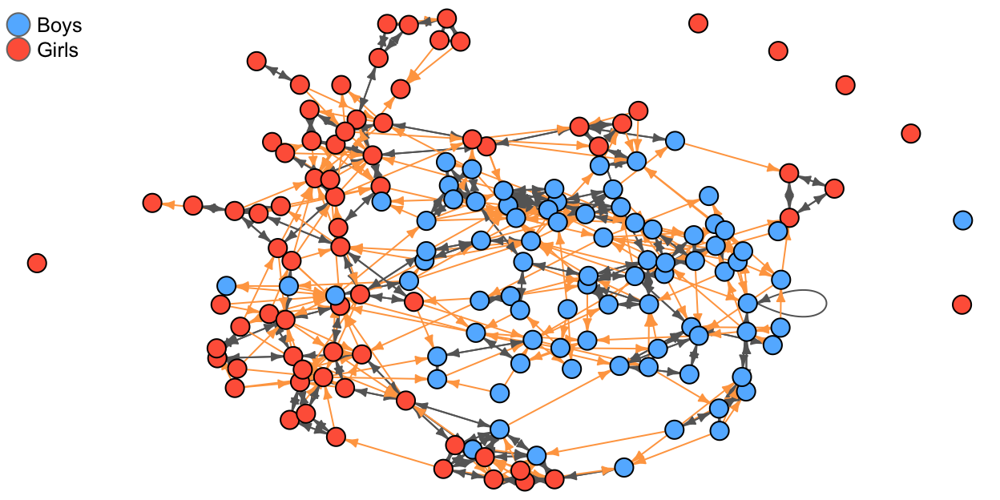
Figure: Friendship nominations at the first wave. Mutual nominations are black, unilateral nominations are orange.
A geographic network
With ggplot() and the map:: package, we can
plot geographical networks.
For example, the flights to/from NY City in the
nycflights13:: (example data in the book).
# Load the nycflights13 package.
library(nycflights13)
# Connect the flights (origin & destination) and airports tables (airport coordinates).
flights |> # use the flights tibble in the nycflights13 package
# add coordinates to airport where flight originates
inner_join(select(airports, origin = faa, origin_lat = lat, origin_lon = lon),
by = "origin"
) |>
# add coordinates to destination airport
inner_join(select(airports, dest = faa, dest_lat = lat, dest_lon = lon), by = "dest") |>
# select the first 100 flights for illustrative purposes
slice(1:100) |>
# pipe the data into ggplot()
ggplot(aes(
x = origin_lon, xend = dest_lon,
y = origin_lat, yend = dest_lat
)) +
borders("state") +
geom_segment(arrow = arrow(length = unit(0.1, "cm"))) +
coord_quickmap() +
labs(y = "Latitude", x = "Longitude")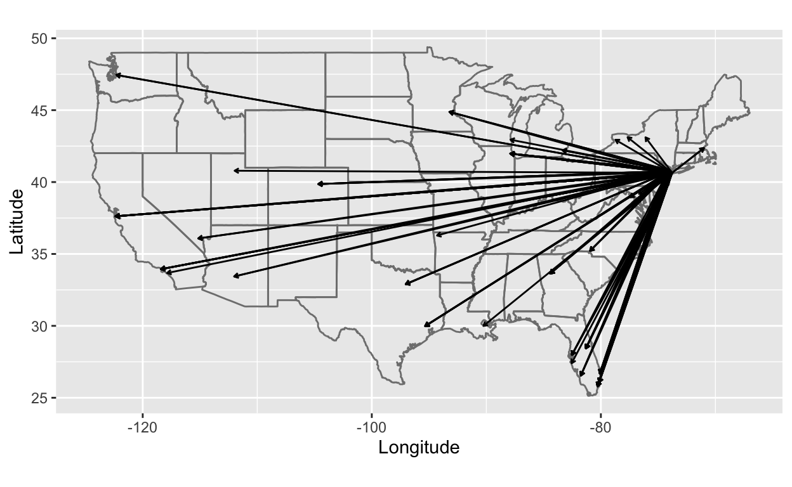
Up Next
- Good luck with the Group Task deadline! Don’t forget the survey.
- You now have important information relevant to your individual Data Project.
- Prepare for next session’s individual consultations by starting to work on your individual part. Come with questions!
And as always
Catch up
Check-in with your Study Buddy
Prepare (see Canvas Module Guide):
Complete the homework (homework room, study buddy, alone…)
Submit questions by 4 PM the day before each tutorial on the Canvas Discussion Forum